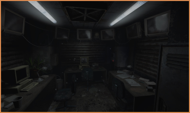
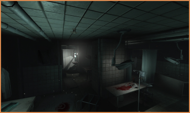
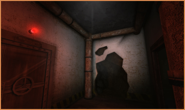

About project
Dark and creepy shafts of Greenland became his home for more than 30 years. High arches of tunnels, awful creatures and the search for truth brought him to insanity. On the brink of the breakdown Red had repeatedly attempted to commit suicide, but something always stopped him. What made him cling to life? What horrors had he gone through he met Philip? This will be told in “Prisoner of Fate”
"Penumbra: Prisoner of Fate" is a total conversion mod for SOMA that is being develop by us, a team CounterCurrent Games, who created Penumbra: Necrologue.
This mod should show you the storyline about Tom Redwood or Red and what happened to him before Philip reached The North Greenland. A unexpected plot, new mysteries and new reasons to fear the unknown await you...
Media




Features
- New inventory design
- New gameplay elements
- Improved graphics
- More enemies
- New artifacts - new opportunities